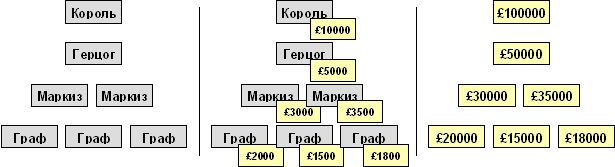
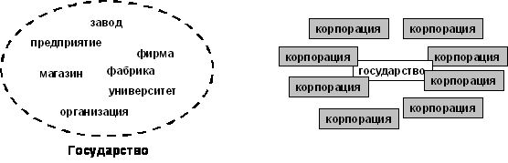

* * * Давайте сравним основы христианства
с Моральным кодексом строителя коммунизма, который был
принят в советском обществе:
–
Преданность делу коммунизма, любовь к социалистической
Родине, к странам социализма.
–
Добросовестный труд на благо общества: кто не работает,
тот не ест.
–
Забота каждого о сохранении и умножении общественного
достояния.
–
Высокое сознание общественного долга, нетерпимость
к нарушителям общественных интересов.
–
Коллективизм и товарищеская взаимопомощь: каждый
за всех, все за одного.
–
Гуманные отношения и взаимное уважение между людьми:
человек человеку – друг, товарищ и брат.
–
Честность и правдивость, нравственная чистота,
простота и скромность в общественной и личной жизни.
–
Взаимное уважение в семье, забота о воспитании
детей.
–
Непримиримость к несправедливости, тунеядству,
нечестности, карьеризму, стяжательству.
–
Дружба и братство всех народов СССР, нетерпимость
к национальной и расовой неприязни.
–
Непримиримость к врагам коммунизма, дела мира и
свободы народов.
–
Братская солидарность с трудящимися всех стран,
со всеми народами. *
* * Теперь сравним основы религии
денег и девять принципов, сформулированных церковью Сатаны
[69]
:
§
Сатана – символ потворства желаниям вместо воздержания!
§
Сатана – символ энергичного существования вместо
бесплодных духовных мечтаний!
§
Сатана – символ естественной мудрости вместо лицемерного
самообмана!
§
Сатана – символ любезности к тем, кто её заслуживает,
вместо любви, потраченной на недоумков!
§
Сатана – символ мести вместо того, чтобы подставлять
другую щеку!
§
Сатана – символ ответственности платёжеспособных
вместо заботы о психических вампирах!
§
Сатана – символ того, что человек – это просто
ещё одно животное, которое иногда лучше, но чаще хуже четвероногих.
Его «божественное духовное и интеллектуальное развитие» сделало
его самым злым животным из всех.
§
Сатана – символ всех так называемых грехов, поскольку
все они ведут к физическим, ментальным или эмоциональным удовольствиям!
§
Сатана – лучший друг церкви, он помогал ей оставаться
в бизнесе все эти годы! *
* * Очевидно, что большинство положений
религии денег прямо противоречит христианству. Соответственно,
бесполезно и невозможно преуспеть в религии денег, сохраняя христианскую
мораль. Совесть, сострадание, честность,
стыд, сомнение в правильности своих действий, самокритика, прощение
обиды и греха, стремление к поиску приемлемого для всех варианта,
становятся слабыми, уязвимыми местами в религии денег. Наглость, подлость, лживость,
безжалостность получают однозначное преимущество. В силу «естественного
отбора» люди с такими качествами и начинают преобладать. Как относиться к той или иной
вере, это ваш выбор. Но чем чётче и быстрее вы его сделаете, тем
большего успеха вы достигните
[70]
. Один человек не может сочетать две прямо противоречащие
религии, прямо противоречащие ценности. Потребности человека на третьем участке S-кривойКак мы отмечали в предыдущей
главе, потребности человека на последнем, третьем участке S-кривой,
когда он уже получил необходимое для жизни и насытился определёнными
удовольствиями, определяются общением. На уровне общества они
определяются религией. Если человек признал равенство
всех, его целью становится бесконечное познание мира и поиск интересных
людей, общение с ними. Как только человек признал неравенство,
он автоматически признал, что есть кто-то ниже его, но есть кто-то
выше его. Если выживает сильнейший, то возникает вопрос – кто
тут сильнейший? Целью существования становится попытка забраться
как можно выше в воображаемой лестнице, получить большую власть.
Возникает проблема сверхчеловека, желание быть на самом
верху и иметь бесконечную власть над миром. Поскольку власть нужна язычнику
для самовозвышения, он постоянно ищет возможности реальной демонстрации
своей власти и получения удовольствий от ощущения своей силы,
получения удовольствия от насилия. Эволюция насилияНа первый взгляд, современное
западное общество, в котором доминирует религия денег, гораздо
более гуманно, чем предыдущие. Свобода у людей вроде бы полная,
и внешне она гораздо выше, чем была, например, при социализме.
Более того, западное общество агрессивно и жёстко отстаивает формальные
права всяческих меньшинств. С другой стороны, в основе Запада
лежат античеловеческие принципы. В чём же здесь дело? Ответ на этот вопрос самого
Запада заключается в том, что он не пытается переделать человека,
но даёт волю его инстинктам, а благополучие создаёт магическая
рука рынка. Наш ответ в том, что насилие
за время развития общества тоже не стояло на месте и постоянно
совершенствовало свои методы. Из открытых форм оно перешло в неявные,
косвенные, скрытые. В этом разделе мы рассмотрим эту эволюцию. Насилие и управлениеДля начала определим понятие
насилия. И насилие, и управление, предполагают принуждение
человека действовать определённым образом. Разница в том, что
управление осуществляется с желанием принести благо управляемому
(хотя оно может принести и вред в силу недостатка знаний). Насилие
делается с сознательным желанием принести прямой вред управляемому
и/или благо управляющему. И насилие, и управление, могут быть
как открытыми, так и скрытыми. В марксизме есть близкое по
смыслу понятие эксплуатации. Мы будем считать, что эксплуатация
– частный случай насилия, обычно в экономике. Например, если один
конкурент уничтожает другого конкурента – это насилие, но это
не есть эксплуатация в привычном понимании. Четыре вида контроляГлядя на историю человечества,
мы можем выделить четыре характерных этапа в эволюции управления
[71]
:
1)
физический контроль,
2)
товарный контроль,
3)
финансовый контроль,
4)
контроль сознания. Кроме того, для каждого вида
возможен прямой и косвенный контроль. Физический
контроль Основан
на управлении человеком через физическую боль. Косвенный вариант
заключается в создании у человека наркотической зависимости и
в управлении им через наркотик. Физическое насилие – самое простое,
и характерно для дикарей и рабовладельцев. На первом этапе оно
заключалось в убийстве и съедении своего противника. На втором
этапе врага уже не убивали, но делали рабом и принуждали к труду,
причиняя ему физическую боль. Время раба иногда контролировали,
иногда – нет. В наши дни физическое насилие
сохранилось в основном в преступном мире и для борьбы с преступным
миром. На уровне обществ физическому
насилию соответствует война, диверсии, терроризм, локальные конфликты,
сепаратизм. Недостатком
является невозможность скрытого физического насилия. Управляемый
осознаёт, что им управляют, и нередко сопротивляется. Существует
серьёзная опасность, что он может ответить на физическое насилие
физическим насилием. Товарный
контроль Основан
на управлении человеком через необходимые для его жизни продукты,
вещи или товары. Прямой – контроль над самими товарами, косвенный
– над средствами производства товаров. Товарный контроль возможен
как в скрытом, так и в открытом виде. Обычно прямой и косвенной товарный
контроль применяются совместно. В феодальном обществе косвенным
контролем была собственность на землю, прямым – оброки и натуральные
подати. Это был неполный контроль, поскольку большую часть времени
крестьянин был предоставлен сам себе. В рыночной экономике товарный
контроль резко усилился, поскольку хозяин контролирует и товары,
и средства производства, и время наёмного работника. На уровне обществ товарный
контроль осуществляется через международную торговлю. Недостатком
является необходимость постоянно производить товары как средства
контроля и иметь ресурсы для такого производства. По мере насыщения
потребностей человека действенность товарного контроля сама по
себе ослабевает. Финансовый
контроль Является
переходным между товарным и контролем сознания (до насыщения минимальных
потребностей преобладает товарный, после – сознания). Прямой вариант
– контроль движения денег к человеку и от человека. Косвенный
– контроль средств создания денег. Применяется в обществах с высокой
степенью разделения труда, где деньги управляют движением товаров
(в отличие от натурального хозяйства или бартера). Более скрытен,
чем предыдущие виды контроля, вызывает мало сопротивления. Возможен
дистанционно, без непосредственного контакта с управляемым. На уровне обществ финансовый
контроль осуществляется через мировую торговлю и финансовые рынки. Недостаток
– ослабевает по мере насыщения потребностей человека, и его можно
обойти путём бартера. Контроль
сознания В прямом виде
– отдание приказаний или просьба, в косвенном – управление точками
привязки сознания. В прямом виде
возможен либо при согласии управляемого, либо при подкреплении
другими видами контроля. В косвенном виде незаметен для управляемого
и применяется с момента появления первых культов. Диктатура всегда
связана с прямым контролем сознания, демократия – с косвенным
[72]
. Косвенное управление
сознанием эффективно в любых обществах. С развитием техники стал
возможен скрытый дистанционный контроль сознания с отсутствием
какой-либо ответственности управляющего. Недостатком
является резкое ослабевание контроля сознания при появлении внутренних
противоречий либо при внешней конкуренции. *
* * Суммируя способы контроля:
* * * Следует понимать, что любой
вид контроля может применяться и во благо управляемого. Например,
при ежедневном воспитании ребёнка применяются все четыре вида. Физическое управление – сделай
уроки, иначе поставлю в угол. Товарное – сделай уроки, иначе заберу
любимую игрушку. Финансовое – сделай уроки, тогда получишь деньги
на развлечения. Сознания прямое – будь хорошим, сделай уроки;
сознания косвенное – если ты не сделаешь уроки, над тобой будут
смеяться в школе. * * * Любой вид контроля ведётся в
условиях конкуренции. Разные виды контроля развивают разные качества
человека, которые помогают выиграть борьбу. Физический развивает владение
оружием и физическую силу. Товарный – работоспособность и изобретательность,
умение делать товары быстрее, качественнее и дешевле. Финансовый
– умение считать, хитрость, изворотливость. Прямой контроль сознания
– твёрдость, принципиальность, способность убедить. Косвенный
контроль сознания – умение завуалировано лгать и способность подавить
психику другого человека. Переход от одного вида контроля к другомуПо мере усложнения общества
неизбежно усиливается и степень контроля над людьми. Ослабление
одного вида контроля означает лишь то, что усилился другой вид.
Если более сложный вид контроля не работает эффективно, немедленно
применяется более жёсткий и простой вид. Это справедливо как для отношений
внутри общества, так и для отношений между обществами. Например,
если человек не хочет платить налоги, его штрафуют, затем лишают
имущества, затем сажают в тюрьму. Если одна страна не подчиняется
политике другой страны, то её ставят в финансовую зависимость;
если финансовая зависимость не работает, то вводят товарные санкции;
и, наконец, ведут прямые военные действия. Ослабление одного из простых
видов контроля обычно преподносится управляемому как полная свобода.
В действительности необходимо искать, где был введён новый
контроль. Не имеет смысла говорить о свободе
человека или независимости государства, если это только физическая
свобода и независимость, а остальные три вида контроля присутствуют.
*
* * Во времена К.Маркса самым явным
был контроль посредством частной собственности на производство
товаров. Соответственно, марксизм сосредоточился на анализе именно
этого способа контроля и насилия. Отметим основные ограничения
такого подхода. Частная собственность на производство
может и не приводить к насилию, если существует множественная
конкуренция, либо если собственность невелика и используется для
личных нужд. С другой стороны, можно контролировать общество,
и не владея производством, например, через распределение или торговлю.
Наконец, можно контролировать собственность не через право владения,
а через право распоряжения (наёмный директор или управляющий на
государственном или на частном предприятии). Таким образом, устранение
частной собственности само по себе не ведёт к устранению насилия. Во времена К.Маркса роль всемирных
денег выполняло золото. Никто не мог контролировать процесс создания
золота
[74]
, поэтому усилия сводились к контролю его движения
и к контролю его ограниченной добычи. С конца 1960-х годов роль
всемирных денег выполняет бумажный и электронный доллар, производство
которого происходит просто по желанию его владельцев. Во времена К.Маркса не существовало
и нынешних методов контроля точек привязки сознания. «Частная
собственность на сознание» принадлежала в основном церкви. Поэтому
освобождение сознания связывалось с уничтожением церкви, а не
с уничтожением способов насилия над сознанием как таковых. Товарный, финансовый и контроль
сознания в современной рыночной экономике будет рассмотрен подробно
в последующих главах. Государство – защита и насилиеПоскольку существует насилие,
существует и необходимость защиты от него. Для защиты общества
от всех видов насилия создаётся система защиты, которую
мы называем государством. Для защиты от большего насилия
приходится прибегать к меньшему; часто приходится заставлять людей
объединяться помимо их текущего желания, ограничивать их свободу.
Для защиты от более сложного и скрытого насилия нередко приходится
прибегать к более простому и более открытому принуждению. Например,
для защиты от порнографии государство наказывает тюрьмой. К сожалению, любая власть склонна
к злоупотреблению. Злоупотребление властью приводит к тому,
что государство вместо защиты начинает заниматься насилием по
отношению к своим гражданам. Гражданам начинает казаться, что
государство вообще не нужно, и оно только вредит. О каком человеке идёт речь в
следующем описании? Почти все, кто встречался с ним в жизни, становились
инвалидами. Одни лишились рук и ног, у многих остались глубокие
шрамы на животе и на спине. Нескольких человек он зарезал заживо. Кто это: палач, убийца, бандит?
Это описание среднего хирурга, работающего в больнице. Примерно
так же языческая пресса описывает государство, особенно Советское
государство. Важно сводить внутреннее насилие
в государстве к минимуму. Но если уничтожать государство, то общество
просто скатывается к более простым и диким формам насилия, к господству
физической силы
[75]
. Государство было бы ненужным,
если бы никто из людей не пытался захватить власть над другими
людьми с помощью любого вида насилия. Попытки уменьшить роль государства
в рыночной экономике просто открывают дорогу как более изощрённому,
так и более примитивному насилию. Государство обязано отслеживать
все виды насилия и защищать от них. Чем сложнее система
насилия, тем сильнее и организованнее должна быть система защиты.
Насилие само по себе никуда и никогда не исчезнет. Если будет
существовать возможность насилия одного человека над другим, то
обязательно найдётся тот, кто займётся насилием. Поэтому государство
будет существовать всегда. Иерархия как система властиИерархия насилия и иерархия защитыДва принципиально разных представления
христианства и религии денег о природе человека выразились в формировании
и развитии совершенно разных христианских государств и языческих
государств, которые со временем превратились в рыночные. Язычник считает, что одни люди
выше других, другие ниже. Он не видит мир как многомерный и бесконечный.
Он видит плоскую фотографию звёздного неба, которая повёрнута
под определённым углом. На фотографии все звёзды расположены одна
под другой, и образуют вертикальную пирамиду. Язычник хочет забраться
на самый верх этой плоской пирамиды, или хотя бы занять «хорошее»
место. Место, которого он достоин. Чем выше пирамида, тем выше
власть. Для построения большой пирамиды не обойтись без массового
насилия. Для массового насилия нужна довольно сложная система
насилия. Язычникам приходится объединяться. Вначале они просто собирались
в кочевые банды для налётов на другие народы. Постепенно в силу
своей тяги к власти, и в силу того, что порядок эффективнее банды,
они начали выстраивать иерархии власти. Каждой точке пирамиды
власти они приписали соответствующего более или менее важного
идола, затем – должности и звания, званиям – конкретных людей. Движение к вершинам власти стало
выражаться в движении по иерархии. Если иерархия в целом добивалась
большей власти, например, завоёвывала соседний народ, то и власть
каждого члена иерархии увеличивалась пропорционально его доле
в добыче. Язычник
всегда видит людей над собой и под собой. Христианский человек,
особенно русский человек, всегда считал себя равным со всеми и
свободным. Над ним был только общий Бог. Русскому человеку близка
сеть, возможность свободы общения и свободы действий. Ему
противна иерархия
[76]
. Для защиты от зверей и от природных
бедствий люди объединялись в семьи и роды; для защиты от внешних
врагов роды объединялись вместе. В войне иерархическая организация
бьёт собравшихся вместе хороших, но слабоорганизованных людей.
Поэтому и у свободных людей возникла вынужденная необходимость
в создании своей, изначально сугубо защитной, военной иерархии. Во главе её стал монарх, как
глава большой семьи, призванный защищать веру и своих подданных
от внешних и внутренних врагов. Монарх возглавлял защитную феодальную
иерархию. Названия феодальных титулов изначально происходили от
сугубо военных понятий. Например, «герцог» – командующий территориальной
армией, «маркиз» – командующий пограничным военным округом. В России единое государство
возникло как защита от татаро-монгольского ига. Развитие и разложение иерархииПостепенно иерархия развивалась,
возникало всё большее количество уровней, званий, полномочий и
привилегий. В тех странах, где была сильна центральная власть,
например, в Византийской империи или в России, иерархия была меньше
и проще. В странах с высокой феодальной
раздробленностью, особенно в Западной Европе, феодальная иерархия
была обширной и сложной. Феодалы имели сильную, но локальную власть,
и бесконечно заключали союзы друг с другом против других феодалов,
стремясь расширить свои владения. Возникли системы сюзеренов и
вассалов, со сложными правилами подчинения одного другому. По мере увеличения производства
еды и товаров и уменьшения угрозы войн и набегов, феодальные иерархии
постепенно стали терять свои защитные функции и превращаться в
праздные мини-общества изобилия. Разложившаяся иерархия защиты
всегда ищет способы избавиться от ответственности, но сохранить
власть и злоупотреблять ею в своих интересах. Феодалы постепенно
захотели стать рабовладельцами. *
* * Раннее христианство не имело
иерархии священнослужителей. Постепенно такая иерархия сложилась
и получила сильную власть. Как только появилась развитая иерархия,
она слилась с существовавшей языческой иерархией Римской империи.
Христианство стало официальной религией Рима. Если вначале римляне
убивали христиан, то на закате существования Древнего Рима в его
армию принимали только христиан. При этом римское христианство
прекрасно сочеталось с рабством и с ограблением провинций. В России дворянство возникло
из людей, совершивших ратные подвиги во имя отечества. Царю всем
народом была доверена защита земли и веры. Отличившимся воинам
царь выдавал во временное владение земли с крестьянами. Обязанностью
дворянина было служение в армии, обязанностью крестьян – содержание
дворянина, содержание своего защитника, поскольку он не мог прокормить
себя, одновременно воюя. Если дворянин переставал служить, то
земли у него изымались. Постепенно дворянство стало
злоупотреблять своей властью. В 1762 году обязанность дворян служить
была отменена царём Петром III,
но крепостная зависимость крестьян была сохранена. Дворяне получали
подати с крестьян уже не за службу, а просто за звание. Постепенно
это привело к тому, что бездельничающая знать стала просаживать
деньги на развлечения за границей, и мало интересоваться тем,
что происходит с их подданными. Даже разговаривали дворяне уже
не по-русски, а по-французски. Оцифровка иерархииВ сложной феодальной иерархии
было много неудобного. Для развития власти насилия, иерархию и
правила движения по ней надо было усовершенствовать и упростить.
С этими требованиями прекрасно
справилась оцифровка иерархии. Вместо сложных титулов и правил
каждой ячейке, каждой позиции в иерархии была просто приписана
цифра, числовое значение, выраженное в деньгах
[77]
. Кроме того, надо было выбрать
общего для всех бога, который бы не противоречил существовавшим
национальным богам. Золото стало единым богом, универсальным
индикатором положения человека во всемирной иерархии. Таким образом
язычники договорились о том, как мгновенно выяснить, кто из них
выше или ниже другого. Вначале денежная иерархия в
Европе существовала параллельно с феодальной, постепенно феодальная
слилась с ней, а в итоге осталась только денежная. Этот процесс
иногда называют «первоначальным накоплением капитала». В Америке
денежная иерархия сразу возникла в чистом виде.

От
иерархии титулов к иерархии денег. *
* * В старой иерархии надо было
знать все звания и титулы, взаимоотношения и преференции, чтобы
понять, в каком месте иерархии находится человек, и, соответственно,
выше он или ниже другого. В новой иерархии – сравнение на уровне
арифметики. У того состояние один миллион, у этого – пять, и так
далее. Журналы, например, «Форчун», ежегодно публикуют текущее
состояние верхушки мировой денежной иерархии. Раньше была проблема поиска
соответствия между иерархиями и властями разных стран. Например,
кто был выше, граф в России или курфюрст в Германии? В старой
требовались всевозможные табели о рангах. В новой иерархии этот
вопрос решается просто пересчётом денежного состояния согласно
курсу валюты. Иерархия или отдельный человек любой страны автоматически
включаются во всемирную иерархию. Регулировать относительную власть
местных иерархий можно простым изменением курса валют. В старой иерархии были сложны
законы появления новых членов и ухода старых. Правила наследования
и пожалования титулов тормозили более предприимчивых и порождали
конфликты. В денежной иерархии изменение состояний не зависит
от происхождения и воли короля. Денежная иерархия стала непрерывной
и однородной, движение вверх-вниз стало быстрым и простым. В старой иерархии было сложно
договариваться о дележе добычи в результате войны или иных операций.
В новой иерархии добыча делится пропорционально вложенным деньгам. Старая иерархия была неповоротлива
и взаимозависима. Сюзерен писал письмо вассалу с указанием оказать
помощь другому вассалу. Вассал мог ещё десять раз подумать и не
торопиться. В новой иерархии просто выдаются деньги, которые принимаются
универсально и мгновенно в любой точке мира. Новая иерархия позволила сменить
конкуренцию между иерархиями разных стран на совместное насилие
над теми, кого они были призваны защищать. Если раньше верхи зависели
от низов, ибо верхам хотя бы требовались солдаты, то теперь низы
стали нужны постольку поскольку. *
* * В старой иерархии конкретный
человек как личность и его место были единым целым. В новой иерархии
свойство власти отделилось от человека и стало независимым.
Иерархия личностей была заменена иерархией владельцев собственности,
а в итоге – безличной иерархией собственности. Вместе с этим отделением исчезли
и качества личности – смелость, преданность, просвещённость. Они
стали не только не нужными, но и мешающими единственной цели –
накоплению денег как символа и инструмента власти. Наконец, денежная иерархия стала
единой, абсолютной и универсальной. Власть генерала в армии распространяется
на солдата только на время службы, в остальное время генерал и
солдат полностью равны. Власть начальника на работе существует
только в рамках работы. Власть денежной иерархии не ограничена,
она стремится распространиться на всё существующее в мире. Абсолютизация власти денегI.Частная собственностьМы подошли к определению того,
чем является частная собственность в религии денег. Частная
собственность человека – это его
ячейка, универсальное место в языческой иерархии. Это выражение
его власти как владения определённой частью мира. Эта власть
представлена в числовом виде, в деньгах. Естественно, денежная иерархия
стремится к абсолютной власти, стремится взять всё в мире
под свой контроль. Всё что есть – земля, товары, отношения между
людьми – должно быть оцифровано
[78]
, выражено в деньгах, и отдано во власть тому или
иному члену иерархии. Каждый человек обязан быть членом иерархии. Соответственно, сигналом положения
в иерархии служат внешние признаки владения вещами и собственностью.
Например, тип автомобиля
[79]
, дома или квартиры, украшений или дорогой одежды. Передвижение по денежной иерархии
выражается не титулами, но переходом собственности – и денег –
от одного члена иерархии к другому. Прибыль – выражение
изменения места в иерархии. В отличие от Древнего Рима,
прямое владение людьми, рабство, пока запрещено, поэтому человек
оцифровывается по частям. Оцифровывается, и, соответственно, подчиняется
власти денег всё, что есть у человека. Оцифровываются его время,
способности, его сознание, и всё, что окружает его. Вместо рабства
целиком применяется контроль отдельных частей. Частная собственность как выражение
места человека в обществе, его власти – первична в сознании
людей. Не неравенство возникает как следствие частной собственности,
а наоборот, изначальное желание быть неравным есть первопричина
возникновения частной собственности
[80]
. Понятие класса и вераСоответственно, понятие марксизма
об антагонистических классах, имеющих разные интересы,
верно только в том случае, когда классы относятся к разной
вере, к разным религиям. Люди, относящиеся к одной религии,
имеют в целом одни и те же интересы. Если правила движения снизу
в верх иерархии ограничивают переход людей из одного слоя в другой,
например, из крестьян в помещики, то возникают классы и классовые
противоречия. Если, как в денежной иерархии, свобода движения
не ограничена происхождением, то и неразрешимых внутренних противоречий
не возникает. Если рабочий хочет (но
временно не может) купить автомобиль как у хозяина, чтобы произвести
впечатление на других; если он хочет занять место
своего хозяина, то между ними нет антагонистических противоречий.
Это разные слои иерархии, но это одна иерархия, одна вера в неравенство.
Они скорее найдут способ насилия над кем-нибудь третьим, чем будут
конфликтовать между собой
[81]
. Если человек признаёт разделение
на высших и низших, признаёт иерархию, то не важно, будет ли частная
собственность запрещена законом или нет, иерархия всё равно возникнет.
Если люди будут стремиться к неравенству, то числовая, денежная
иерархия, как самая гибкая и активная, неизбежно победит нечисловую
[82]
. Марксизм, говоря о классах,
обычно и имел в виду различия в вере (называя её идеологией, пролетарской
и буржуазной). Представления о классовом характере литературы,
искусства и науки, как раз и отталкиваются от понимания
непримиримости веры в деньги и прибыль и веры в справедливость.
Но вера – это вопрос не экономический, не материалистический и
не вопрос отношения к собственности, как считал марксизм. Это
вопрос духовный. Поэтому вера и идеология – не
классовые понятия. Дворянин может отвергать прибыль и быть верным
служителем Отечества и общего блага. С другой стороны, рабочие
могут стремиться к увеличению своих личных благ за счёт других
рабочих. «Оппортунизм» тред-юнионов или
европейской социал-демократии в начале Первой мировой войны как
раз и был показателем того, что рабочие в странах Европы уже перешли
в денежную веру. Не столько тогдашние партии «предали интересы
рабочего класса», сколько они отразили представления самого европейского
рабочего. Пролетариату нечего терять,
кроме своих цепей. Но есть рабочий-потребитель со средним достатком,
то есть мелкобуржуазный элемент. Есть и люмпен-пролетариат, иными
словами, нищий с поганой верой. Социалистические революции произошли
как раз в тех странах, где большую часть населения составляли
крестьяне или рабочие в первом поколении, как в России. Христианская
вера в крестьянах сильна естественным образом, поскольку они,
в отличие от рабочих, мало зависят от денег и, соответственно,
не признают их власть. Нет единых «классовых» ценностей.
Но, с другой стороны, нет и не может быть «общечеловеческих» ценностей.
Могут быть общехристианские ценности, но нельзя объединить
Христа и Антихриста. Соответственно, следует говорить
не о классовой борьбе, но о религиозной борьбе. Борьба христианства
и религии денег – непримирима. Из этой борьбы может выйти только
один победитель. КорпорацияЯзыческой власти денег было
необходимо откинуть оставшиеся от христианства функции большой
семьи, защиты подданных. Единственной целью владельца денег (капитала)
является дальнейшее увеличение количества денег
[83]
. Запад нас постоянно учит, что бизнесмен или банкир
никому ничего не должен; это государство должно создавать бизнесу
такие условия, чтобы ему было выгодно инвестировать, и он мог
получить хорошую прибыль. Иными словами, единственной
целью власти денег является её безграничное увеличение. При этом
она не хочет никаким образом зависеть от воли остального населения.
Для этих целей прекрасно подошла форма корпорации. Корпорация
– основной элемент в религии денег, соответствующий месту
государства в христианстве. В следующей главе мы подробно
рассмотрим, как появились корпорации. Пока же отметим несколько
наиболее важных моментов. Право голоса в государстве принадлежит
всем его гражданам. Право голоса в корпорации принадлежит
только её собственникам пропорционально вложенным деньгам. В корпорации
даже формально власть принадлежит только самой власти. Корпорация,
в отличие от государства, и не обязана преследовать ничьи интересы,
кроме своих. Государство не может избавиться
от своих жителей, если они стали старыми или заболели. Корпорация
может избавляться от своих работников или нанимать новых по желанию
и в любой момент. Для корпорации не имеют значения
границы, культуры и народы, она может перемещаться из одной страны
в другую по собственному желанию в поисках большей выгоды. Соответственно,
интересы людей той или иной страны её не интересуют. Государство несло неограниченную
ответственность перед своими подданными. Корпорация несёт ограниченную
ответственность, не превосходящую размеров её имущества. Естественно,
что ущерб, который может нанести корпорация, не ограничен. Один человек может прямо или
косвенно владеть несколькими корпорациями. Он создаёт «чёрные»
фирмы для грязных нужд, которые действуют в интересах формально
не связанных с ними «белых» корпораций
[84]
. «Чёрные» фирмы выполняют свою цель и отмирают.
При этом ответственность и расходы сводятся к минимуму, прибыль
– к максимуму. Неудивительно, что корпорации
накопили больше власти, чем государства. В наши дни денежный оборот
крупнейших из них намного превысил размер валового внутреннего
продукта (всего ВВП, не бюджета) большинства государств.
По состоянию на 2000 год в списке ста самых крупных экономик мира
51 место занимали корпорации и только 49 мест – государства (сравнивая
объём продаж корпораций и ВВП стран). II.Механизм власти денегКак
деньги подчиняют всё в мире своей власти?
Шаг 1.
Всё в мире, от материальных предметов до мыслей,
должно стать частной собственностью, должно быть приватизировано.
Шаг 2.
Собственности должно быть присвоено числовое, денежное
значение (навешена бирка с ценой).
Шаг 3.
Собственник должен действовать из одного принципа
– увеличить количество принадлежащих ему денег.
Шаг 4.
Собственность должна свободно обмениваться на деньги,
то есть находиться в рыночном обороте.
Шаг 5.
Соответственно, право покупки и в дальнейшем распоряжения
этой стоимостью, то есть всем миром, получают деньги (или
тот человек, у которого находятся деньги; но не государство, не
общество и не демократия). Власть денег и демократияТрадиционно Запад говорит о
демократии как системе четырёх властей – законодательной, исполнительной,
судебной и власти прессы. При этом Запад учит, что чем
меньше государство вмешивается в свободный бизнес, тем лучше.
Мы видим, что деньги стремятся к абсолютной власти над
миром. Естественно, они не хотят делиться с другими властями.
Деньги используют четыре ветви власти просто для прикрытия, для
создания видимости демократии. Они стремятся полностью починить
все остальные власти деньгам. *
* * Давайте посмотрим, можно ли
получить голос в прессе без денег? Можно ли купить орган свободной
прессы? Орган прессы – такой же бизнес, рассчитанный на прибыль,
как и любой другой. Купить любую редакцию можно совершенно официально.
Рекламу или заказные статьи можно опубликовать за деньги (но нельзя
бесплатно). Можно ли купить место в парламенте?
Можно ли попасть в парламент без денег? Успех выборов напрямую
зависит от финансирования
[85]
. Политики в США и в России постоянно заняты пополнением
своих избирательных фондов. Кто влияет на решения парламента?
В 1998 году на каждого члена конгресса США было 38 официально
зарегистрированных лоббистов и 2.7 миллионов долларов на лоббирование. Можно ли купить место в правительстве?
Их раздают те, кто победил на выборах, обычно в интересах тех,
кто жертвовал в избирательные фонды. Можно ли купить место в судебной
системе – легально, без коррупции? Выборным судьям тоже нужны
деньги на избирательную кампанию. Тех судей, которых назначают,
назначают те, кто выиграл (т.е. купил) выборы. И законы для судей
пишут те, кто «выиграл» выборы. * * * Говоря о демократии,
мы говорим: один человек – один голос. Во власти рынка
и денег один доллар – один голос
[86]
. Запад учит нас, что всякое узурпирование власти
плохо, против него надо бороться. Если бы у всех людей было более-менее
равное количество собственности и долларов, то это была бы демократия.
Но если 10 процентов населения США владеет 90 процентами всей
собственности, то это и есть полное узурпирование власти
[87]
. Власть денег – это власть вместо
всякой другой власти
[88]
. *
* * После европейских буржуазных
революций и до Первой мировой войны избирательное право в странах
Запада и не было всеобщим. Существовал высокий имущественный порог.
Цензы происхождения и знатности феодальной эпохи были заменёны
простым денежным выражением. Реальным королём стал самый богатый
из богатых. «Великая» Французская революция
1789 года («свобода, равенство, братство»), привела к такому братству,
что избирательное право получило целых 0.5 процента населения.
Революция 1830 года резко увеличила число избирателей – до 1 процента
населения. На критику власть отвечала просто: хочешь голосовать
– стань богатым. Постепенно вся власть в странах
Европы была передана деньгам, отлажены избирательные технологии.
Тогда выборы сделали всеобщими. Их результаты всё равно определяются
деньгами, но создаётся видимость равноправия и бесконечное поле
для поучения «диктаторов» в остальных странах. Даже сами избиратели
это понимают, поэтому большинство из них просто не ходит на выборы. * * * И, наконец, власть денег даже
формально не подчиняется государству. В большинстве стран центральные
банки, управляющие денежным обращением, по закону не подчиняются
правительству. Первая конституция США, государства,
основанного в чистом виде на власти денег, вообще
запрещала правительству выпускать деньги или создавать государственные
банки. Деньги выпускали только частные банки и только в рамках
наличия у них золота. Федеральная резервная система
(ФРС) США, которая ныне осуществляет контроль над главной мировой
валютой – долларом, была основана миллионерами вроде Дж. П. Моргана
как частное заведение. И сегодня ФРС является частной фирмой
с частными управляющими, которых назначают частные акционеры.
Естественно, что управляющие любой фирмы действуют только в интересах
её акционеров. Глубинный смысл поправок о свободе
слова, о свободе от религии, о ношении оружия, лежащих в основании
Америки, – в освобождении людей от всех моральных обязанностей
и от всех людских соображений для полного подчинения единственной
власти денег
[89]
. Власть денег – это обычно скрытая
власть. Эта скрытость жёстко охраняется законами о коммерческой,
банковской и прочих тайнах. Место государства в религии денегВ традиционном, христианском
и русском представлении, государство превыше всего и управляет
всем. Люди, отдельные фирмы и организации подчиняют свои интересы
общим. Поскольку власть денег стремится
быть абсолютной и всемирной, в нём государству отводится второстепенная
роль, роль полицейского, «оказателя услуг населению» и посредника
между денежными интересами.

Слева
– представление о месте государства в русском сознании. Справа
– место государства в религии денег. Изначально у государства было
много рычагов управления, в том числе и производством. Власть
монарха
[90]
была абсолютной, он разрешал или запрещал тот или
иной вид бизнеса, выдавал лицензии, разрешал создание корпораций. Постепенно все основные рычаги
управления производством у государства были отняты, и оставлен
только один – через сбор налогов, то есть через всё те же деньги.
Государство стало иметь не больше власти, чем богатое частное
лицо. Преимущество частного лица, естественно в том, что оно не
несёт ни перед кем ответственности и делает, что хочет. Если раньше предприниматели
конкурировали между собой за право получить ту или иную концессию,
то теперь государства конкурируют за инвесторов, снижая налоги. Все буржуазные
революции проходили под лозунгами уничтожения или резкого уменьшения
государства, которое мешает развитию свободного рынка. Действительно,
государство мешает экономике. Ибо чисто экономические методы –
это неограниченная власть денег. А государство пытается усмирить
деньги властью человека. Интересно, что даже юридически
в странах Запада государство просто приравнено к корпорации. Города
и муниципалитеты зарегистрированы как особого типа фирмы. Они
часто так и называются, например, город Дельта – юридически это
Корпорация Дельта. Церкви тоже зарегистрированы
просто как корпорации, и могут быть ликвидированы путём банкротства.
Право на вероисповедание необходимо купить. Когда
интересы корпораций противоречат интересам государства, преимущество
отдаётся корпорациям
[91]
. Абсолютная монархия сменилась абсолютной властью
денег. Понимание свободы в религии денегВ соответствии с разным отношением
к равенству, на Западе и в России принципиально отличается понимание
свободы. Для русского равноправие
– всеобщее равенство, благо и польза для всех, отсутствие насилия. Для западного язычника
[92]
равноправие – это не равенство людей, ибо он не
признаёт его. Для него равноправие – равные возможности движения
по денежной иерархии. Не отрицание насилия, но равные возможности
обмана и насилия. Равные правила игры для всех, но в рамках власти
денег. Это возможность залезть выше кого-то, сорвать куш. Он готов
рисковать и даже проиграть. Но если отобрать у него возможность
возвыситься, он не видит смысла в жизни. Он не понимает, что такое
свобода и что такое равенство, что с ними делать. Он подобен преступнику,
который ворует, чтобы пошиковать, периодически попадает в тюрьму,
но в принципе не хочет вести нормальную жизнь. Запад сделал немало шагов, чтобы
уравнять право негров или индейцев быть богатыми. Но все правила,
все законы свободного рынка написаны только для того, чтобы сохранить
и усовершенствовать власть денег и денежную иерархию как систему.
Они отталкиваются от денежной иерархии, от неравенства, поэтому
свободный рынок никогда и не может привести к равенству. Религия денег со временем просто
осознала, что она станет сильнее, если будет приветствовать всех
своих приверженцев, независимо от расы и национальности. *
* * Таким же образом отличается
и отношение к правам человека. Русский человек изначально
внутренне полностью свободен, земля и весь мир принадлежат ему.
Но русский жертвует частью своих прав для защиты общего блага.
Соответственно, он болезненно расстаётся со своими правами, хочет
отдать их как можно меньше. У современного западного человека,
потомка варваров и римских рабов, изначально прав нет. Он рождается
в мире, где всё уже является чьей-то частной собственностью,
включая саму землю
[93]
. Единственный способ выжить – тем или иным способом
отвоевать кусок собственности для себя. Как особое снисхождение отдельные,
занумерованные права жалуются западному человеку Биллем о правах
или поправкой к конституции. Западный человек воспринимает это
как особый дар – ему дали свободу слова! А ведь могли бы и не
дать. Поэтому западный человек кричит на всех углах о своих двух
с половиной правах и очень боится, что у него появится другой,
более злой хозяин и отнимет часть этих прав. Что именно означают понятия
свобода – «freedom»
и свободный – «free»
в английском языке? Это совсем не та русская Свобода. «Free»
означает бесплатный. Свобода по-английски – это то, за
что не надо платить
[94]
. У западного человека есть две
фундаментальные «свободы» – право бесплатно говорить и право бесплатно
дышать
[95]
. У него нет прав спать, пить, есть, работать на
земле. Всё остальное – и это по конституции – только за деньги. Западный человек ужасно боится
выйти за границы даже этих прав – не дай бог при всей свободе
слова сказать, или даже подумать неправильно, например,
о свободе бизнеса или о свободе педерастов. На него сразу настучат
остальные, и накажет вышестоящий. Тех, кто посмеют, причисляют
к анти-культуре и отрезают от общества. А хозяин развлекается, гоняя
человека словно шарик, которому разрешили двигаться по оси Х,
но запретили по осям Y
и Z. Гоняет и
получает удовольствие. Если и вы хотите преуспеть в
рыночной экономике, глубоко осваивайте и широко применяйте различные
формы насилия, особенно скрытые. |
||||||||||||||||||||||||||||||||||||||||||||||||||||||||||||||||